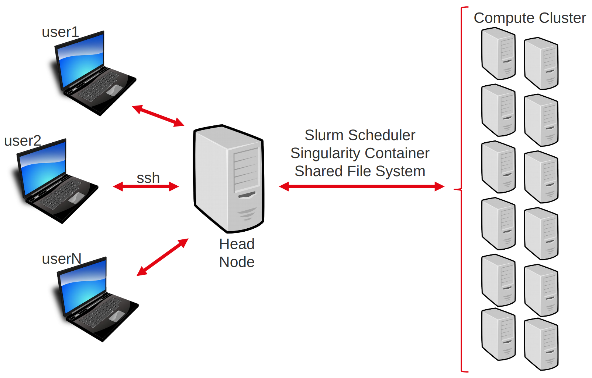
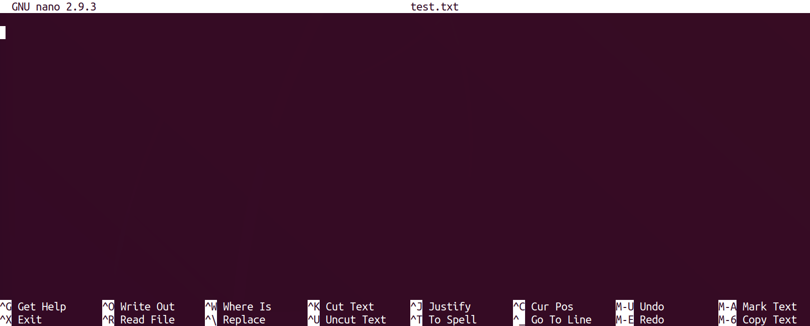

Server login + unix fresh up
To conduct the practicals of this course, we will be using a dedicated High Performance Computing cluster. This matches the reality of most NGS workflows, which cannot be completed in a reasonable time on a single machine.
To interact with this cluster, you will have to log in to a remote head node. From there you will be able to distribute your computational tasks to the cluster using a job scheduler called Slurm.
This page will cover our first contact with the remote cluster.
You will learn to :
- understand a typical computer cluster architecture.
- connect to the server.
- use the command line to perform basic operations on the head node.
- exchange files between the server and your own machine.
- submit a job to the cluster.
Note
If you are doing this course on your own, then the remote server provided within the course will not be available. Feel free to ignore or adapt any of the following steps to your own situation.
The computing cluster
The computing cluster follows an architecture that enables several users to distribute computational tasks among several machines which share a number of resources, such as a common file system.

Users do not access each machine individually, but rather connect to a head node. From there, they can interact with the cluster using the job scheduler (here slurm). The job scheduler’s role is to manage where and how to run the jobs of all users, such that waiting time is minimized and resource usage is shared and optimized.
Warning
Everyone is connected to the same head node. Do not perform compute-intensive tasks on it, or you will slow everyone down!
Connect to the server
Say you want to connect to cluster with address xx.xx.xx.xx and your login is login.
Warning
If you are doing this course with a teacher, use the link, login and password provided before or during the course.
The first step will be to open a terminal, a software that provides a command-line interface to a computer.
Open a terminal, for instance with the application Xterm, Terminal, or Xquartz.
Open a new terminal.
Open the WSL shell or open PowerShell then launch WSL from within it
In the terminal, type the following command:
ssh netid@pronghorn.rc.unr.edu
When prompted for your password, type it and press Enter.
Note
There is no cursor or ‘●’ character appearing while you type your password. This is normal. Deleting characters also works invisibly.
After a few seconds, you should be logged into the head node and ready to begin.
Using command line on the cluster
Now that you are in the head node, it is time to get acquainted with your environment and to prepare the upcoming practicals. We will also use this as a short reminder about the UNIX command line.
Commands are issued using a shell command language. The one on our server is called bash. You can refer to this nice Linux Command Line Cheat Sheet (page 1 in particular) for reviewing common commands.
At any time, you can get the file system location (folder/directory) your terminal is currently in, by typing the “print working directory” command:
pwd
When you start a session on a remote computer, you are placed in your home directory. So the cluster should return something like:
/data/gpfs/home/$USER
From then, we are going to do a little step-by-step practical to go through some of bash’s most useful commands for this course.
Creating a directory
practical
Use the command line to navigate to /data/gpfs/assoc/biomarker_hunt/users folder. Here you will create a personal folder and put all materials relating to the analysis of the mouseMT dataset.
Answer
cd /data/gpfs/assoc/biomarker_hunt/users
practical
Use the command line to create a personal folder and create repository called mouseMT where you will put all materials relating to the analysis of the mouseMT dataset.
Answer
mkdir -p $USER/mouseMT
practical
Move your terminal’s connection to that directory.
Answer
cd $USER/mouseMT
The directory /data/gpfs/assoc/biomarker_hunt/data/DATA/mouseMT contains data for this workshop
practical
List the content of the /data/gpfs/assoc/biomarker_hunt/data/DATA/mouseMT directory.
Answer
ls /data/gpfs/assoc/biomarker_hunt/data/DATA/mouseMT
Note
You don’t need to move to that directory to list its contents!
practical
Copy the script 010_s_fastqc.sh from /data/gpfs/assoc/biomarker_hunt/data/Solutions/mouseMT into your current directory,
and then print the content of this script to the screen.
Answer
cp /data/gpfs/assoc/biomarker_hunt/data/Solutions/mouseMT/010_s_fastqc.sh .
less 010_s_fastqc.sh
#!/usr/bin/bash
#SBATCH --job-name=fastqc_mouseMT
#SBATCH --time=01:00:00
#SBATCH --cpus-per-task=1
#SBATCH --mem=1G
#SBATCH -o 010_l_fastqc_mouseMT.o
#SBATCH --account=cpu-s5-biomarker_hunt-0
#SBATCH --partition=cpu-core-0
source activate rnaseq_env
# creating the output folder
mkdir -p 010_d_fastqc/
fastqc -o 010_d_fastqc /data/gpfs/assoc/biomarker_hunt/data/DATA/mouseMT/*.fastq
We’ll see what all this means soon.
Creating and editing a file
To edit files on the remote server, we will use the command line editor nano. It is far from the most complete or efficient one, but it can be found on most servers, and is arguably among the easiest to start with.
Note
Alternatively, feel free to use any other CLI editor you prefer, such as vim (my faveorite editor).
To start editing a file named test.txt, type :
nano test.txt
You will be taken to the nano interface :

Type in your favorite movie quote, and then exit by pressing Ctrl+x (command+x on a Mac keyboard), and then y and Enter when prompted to save the modifications you just made.
You can check that your modifications were saved by typing
less test.txt
Exchanging files with the server
Whether you want to transfer some data to the cluster or retrieve the results of your latest computation, it is important to be able to exchange files with the remote server.
There exists several alternatives, depending on your platform and preferences.
We will use scp.
To copy a file from the server to your machine, use this syntax on a terminal in your local machine (open a new terminal if necessary).
scp <login>@<server-adress>:/path/to/file/on/server/file.txt /local/destination/
For example, to copy the file test.txt you just created in the folder mouseMT/, to your current (local) working directory.
scp netid@pronghorn.rc.unr.edu:~/data/gpfs/assoc/biomarker_hunt/users/$USER/mouseMT/test.txt .
To copy a file from your machine to the server:
scp /path/to/file/local/file.txt <login>@<server-adress>:/destination/on/server/
practical
Retrieve the file test.txt, which you created in the previous practicals, from the remote server to your local machine.
practical
Create a text file on your local computer (using wordpad on windows, Text Edit on Mac, or gedit on linux). Save that file, and then send it to the remote server.
Warning
For Windows users, if you edit files on your computer before sending them to the server, you will likely see strange character at the end of the file lines.
This is because Windows ends line with “\r\n” while Unix uses just “\n”. This can be solved using the dos2unix command line tool:
dos2unix <filename>
CONDA Package Manager
Conda allows a user on a Unix system to install packages without sudo/admin privileges. Additionally, Conda allows users to create “environments” where a specific suite of programs are installed. A user can have as many environments as they want (i.e., for different projects and analyses types). This has the benefit of “freezing” your program versions so that your analyses are reproducible.
Imagine running an analysis, getting your final results, then 2 years later, your PI wants you to re-run the analysis with new samples. However, the programs you used were updated many times in the past years (bug fixes, new features, etc). Perhaps the output format has changed and now you can’t compare the results of the new dataset with the old dataset. Using a Conda environment will allow you to recapitulate the original analysis for the new dataset.
Installing Conda
In order to install Conda, we will need to download the program directly to our remote Linux computer, Pronghorn, or on your local workstation.
Visit this website here: https://github.com/conda-forge/miniforge.
If you scroll towards the bottom, you can see a list of Linux, OSX, and Windows installation options. We will use the one labeled “Linux X86_64”. You can right-click and copy the link location from your browser, but I also provided the link below: https://github.com/conda-forge/miniforge/releases/latest.
practical
Use wget to download the file to your directory. Then run the installation
Answer
wget https://github.com/conda-forge/miniforge/releases/download/26.3.2-3/Miniforge3-26.3.2-3-Linux-x86_64.sh
bash Miniforge3-26.3.2-3-Linux-x86_64.sh
There will be some prompts about the installation which we will proceed through together. In order to scroll through the EULA agreement, use the space bar.
Warning
Once done, you will need to reload the .bashrc configuration to get your new conda installation working. You can either restart your terminal or reload your environment. Please do this now after installing conda by typing exit.
Instead of logging completely out and back in by typing exit, you can tell the terminal to refresh its settings immediately. Use the source command on your bash profile:
source ~/.bashrc
Installing programs with Conda
Now that we have conda installed, let’s install the tree command. This will install tree into your currently loaded environment, which the default is “base”.
conda install -c conda-forge tree htop
After installation try testing the tree and htop commands.
Installing a named environment from a YAML file
You can also install programs using a YAML file which lists the programs to be installed. In the following case, we will be creating the conda environment named rnaseq_env with the software fastqc, fastp, multiqc, star, and subread.
practical
Copy the file /data/gpfs/assoc/biomarker_hunt/data/rnaseq_env.yaml to your current folder
Answer
cp /data/gpfs/assoc/biomarker_hunt/data/rnaseq_env.yaml .
Now that we have the environment YAML file, let’s inspect the file. Notice we list the programs we want to install. We can use conda to setup those programs.
conda env create -f rnaseq_env.yaml
After the install is completed, we can load the conda environment using:
conda activate rnaseq_env
Additionally, you can setup environments with specific versions for programs. This helps with ensuring reprodicibility of analyses at a later date, because you have kept track of the full software stack used for the analysis. Let’s view file /data/gpfs/assoc/biomarker_hunt/data/rnaseq_env_versioned.yaml
Notice the version numbers listed next to the softwares. However, also notice the same environment name is listed at the top as our unversioned YAML.
bash scripts
So far we have been executing bash commands in the interactive shell. This is the most common way of dealing with our data on the server for simple operations.
However, when you have to do some more complex tasks, such as what we will be doing with our RNA-seq data, you will want to use scripts. These are just normal text files which contain bash commands.
Scripts :
- keep a written trace of your analysis, so they enhance its reproducibility.
- make it easier to correct something in an analysis (you don’t have to retype the whole command, just change the part that is wrong).
- often necessary when we want to submit big computing jobs to the cluster.
Create a new text file named myScript.sh on the server (you can use nano or create it on your local machine and later transfer it to the server).
Then, type this into the file:
#!/usr/bin/bash
## this is a comment, here to document this script
## whatever is after # is not interpreted as code.
# the echo command prints whatever text follows to the screen:
echo "looking at the size of the elements of /data/gpfs/assoc/biomarker_hunt/data"
sleep 15 # making the script wait for 15 seconds - this is just so we can see it later on.
# du : "disk usage", a command that returns the size of a folder structure.
du -h -d 2 /data/gpfs/assoc/biomarker_hunt/data
The first line is not 100% necessary at this step, but it will be in the next part, so we might as well put it in now. It helps some software know that this file contains bash code.
Then to execute the script, navigate in a terminal open on the server to the place where the script is, and execute the following command:
bash myScript.sh
Warning
Be sure to execute the script from the folder that it is in. Otherwise you would have to specify in which folder to find the script using its path.
This should have printed some information about the size of /data/gpfs/assoc/biomarker_hunt/data subfolders to the screen.
Submitting jobs
Submitting a simple script
Jobs can be submitted to the compute cluster using bash scripts, with an optional little preamble which tells the cluster about your computing resource requirements, and a few additional options.
Each time a user submits a job to the cluster, SLURM checks how much resources they asked for, with respect to the amount available right now in the cluster and how much resources are allowed for that user.
If there are enough resources available, then it will launch the job on one or several of its worker nodes. If not, then it will wait for the required resources to become available, and then launch the job.
To start with, you can have a look at what is happening right now in the cluster with the command:
squeue
On the small course server, there should not be much (if anything), but on a normal cluster you would see something like:
(samtools) [hvasquezgross@login-0 data]$ squeue
JOBID PARTITION NAME USER ST TIME NODES NODELIST(REASON)
5664823 cpu-core- chip_qc clegenba PD 0:00 1 (DependencyNeverSatisfied)
5668084 cpu-core- pick_bes stevench PD 0:00 1 (Dependency)
5668083 cpu-core- filter_t stevench PD 0:00 1 (DependencyNeverSatisfied)
6085253_[1-5] cpu-s2-co ray-xgb- sfrese PD 0:00 3 (Resources)
6085244 cpu-s2-co FAg2I26r marcust PD 0:00 1 (Priority)
6085245 cpu-s2-co FAg3Cl26 marcust PD 0:00 1 (Priority)
6085246 cpu-s2-co FAg3Cl26 marcust PD 0:00 1 (Priority)
6085217 cpu-s2-co airfoilR smirafza R 17:37:08 1 cpu-44
6085229 cpu-s2-co aimd leicao R 13:34:54 1 cpu-36
6085228 cpu-s2-co aimd leicao R 13:47:03 1 cpu-41
6085227 cpu-s2-co aimd leicao R 14:27:05 1 cpu-20
The columns correspond to :
- JOBID : the job id, which is the number that SLURM uses to identify any job
- PARTITION : which part of the cluster is that job executing at
- NAME : the name of the job
- USER : which user submitted the job
- STATE : whether the job is currently
RUNNING,PENDING,COMPLETED,FAILED - TIME : how long has this job been running for
- TIME_LIMIT : how long will the job be allowed to run
- QOS : which queue of the cluster does the job belong to. Queues are a way to organize jobs in different categories of resource usage.
- NODELIST(REASON) : which worker node(s) is the job running on.
You can look up more info on squeue documentation.
Now, you will you will want to execute your myScript.sh script as a job on the cluster.
This can be done with the sbatch command.
The script can stay the same (for now), but there is an important aspect of sbatch we want to handle: the script will not be executing in our terminal directly, but on a worker node.
That means that there is no screen to print to. So, in order to still be able to view the output of the script, SLURM will write the printed output into a file which we will be able to read when the job is finished (with more or less).
By default, SLURM will name this file something like slurm-<jobid>.out, which is not very informative to us; so, instead of keeping the default, we will give our own output file name to sbatch with the option -o. For example, I will name it myOutput.o.
We will also need to specify the account and partition so SLURM knows which queue to put our jobs in. For this workshop, it should be --account=cpu-s5-biomarker_hunt-0 and --partition=cpu-core-0.
In the terminal, navigate to where you have you myScript.sh file on the remote server and type
sbatch -o myOutput.o --account=cpu-s5-biomarker_hunt-0 --partition=cpu-core-0 myScript.sh
You should see an output like:
sbatch: Submitted batch job 41
Letting you know that your job has the jobid 41 (surely yours will be different).
Directly after this, quickly type:
squeue
If you were fast enough, then you will see your script PENDING or RUNNING.
If not, then that means that your script has finished running. You do not know yet if it succeeded or failed.
To check this, you need to have a look at the output file, myOutput.o in our case.
If everything worked, you will see the normal output of your script. Otherwis, you will see some error messages.
Specifying resources needed to SLURM
When submitting the previous job, we did not specify our resource requirements to SLURM, which means that SLURM assigned it the default:
- 1 hour
- 1 CPU
- 1 GB of RAM
Often, we will want something different from that, and so we will use options in order to specify what we need.
For example:
--time=00:30:00: time reserved for the job : 30min.--mem=2G: memory for the job: 2GB--cpus-per-task=4: 4 CPUs for the job
Your sbatch command line will quickly grow to be long and unwieldy. It can also be difficult to remember exactly how much RAM and time we need for each script.
To address this, SLURM provides a fairly simple way to add this information to the scripts themselves, by adding lines starting with #SBATCH after the first line.
For our example, it could look like this:
#!/usr/bin/bash
#SBATCH --job-name=test
#SBATCH --time=00:30:00
#SBATCH --cpus-per-task=4
#SBATCH --mem=2G
#SBATCH -o test_log.o
#SBATCH --account=cpu-s5-biomarker_hunt-0
#SBATCH --partition=cpu-core-0
echo "looking at the size of the elements of /data/gpfs/assoc/biomarker_hunt/data"
sleep 15 # making the script wait for 15 seconds - this is just so we can see it later on.
# `du` is "disk usage", a command that returns the size of a folder structure.
du -h -d 2 /data/gpfs/assoc/biomarker_hunt/data
I also added the following options :
#SBATCH --job-name=test: the job name#SBATCH -o test_log.o: file to write output or error messages
We would then submit the script with a simple sbatch myScript.sh without additional options.
Example
Create a new file named mySbatchScript.sh, copy the code above into it, save, then submit this file to the job scheduler using the following command :
sbatch mySbatchScript.sh
Use the command squeue to monitor the jobs submitted to the cluster.
Check the output of your job in the output file test_log.o.
Note
When there are a lot of jobs, squeue -u <username> will limit the list to those of the specified user.
Advanced cluster usage : job array
Often, we have to repeat a similar analysis on a number of files, or for a number of different parameters. Rather than writing each sbatch script individually, we can rely on job arrays to facilitate our task.
The idea is to have a single script which will execute itself several times. Each of these executions is called a task, and they are all the same, save for one variable which whose value changes from 1 to the number of tasks in the array.
We typically use this variable, named $SLURM_ARRAY_TASK_ID to fetch different lines of a file containing information on the different tasks we want to run (in general, different input file names).
Note
In bash, we use variables to store information, such as a file name or parameter value.
Variables can be created with a statement such as:
myVar=10
where variable myVar now stores the value 10.
The variable content can then be accessed with:
${myVar}
You do not really need more to understand what follows, but if you are curious, you can consult this small tutorial.
Say you want to execute a command, on 10 files (for example, map the reads of 10 samples).
You first create a file containing the name of your files (one per line); let’s call it readFiles.txt.
/data/gpfs/assoc/biomarker_hunt/data/DATA/mouseMT/sample_a1.fastq
/data/gpfs/assoc/biomarker_hunt/data/DATA/mouseMT/sample_a2.fastq
/data/gpfs/assoc/biomarker_hunt/data/DATA/mouseMT/sample_a3.fastq
/data/gpfs/assoc/biomarker_hunt/data/DATA/mouseMT/sample_a4.fastq
/data/gpfs/assoc/biomarker_hunt/data/DATA/mouseMT/sample_b1.fastq
/data/gpfs/assoc/biomarker_hunt/data/DATA/mouseMT/sample_b2.fastq
/data/gpfs/assoc/biomarker_hunt/data/DATA/mouseMT/sample_b3.fastq
/data/gpfs/assoc/biomarker_hunt/data/DATA/mouseMT/sample_b4.fastq
Then, can create an sbatch array script named sbatchArray.sh with the following contents.
#!/usr/bin/bash
#SBATCH --job-name=test_array
#SBATCH --time=00:30:00
#SBATCH --cpus-per-task=1
#SBATCH --mem=1G
#SBATCH -o test_array_log.%a.o
#SBATCH --array 1-10%5
#SBATCH --account=cpu-s5-biomarker_hunt-0
#SBATCH --partition=cpu-core-0
echo "job array id" $SLURM_ARRAY_TASK_ID
# sed -n <X>p <file> : retrieve line <X> of file
# so the next line grabs the file name corresponding to our job array task id and stores it in the variable ReadFileName
ReadFileName=`sed -n ${SLURM_ARRAY_TASK_ID}p readFiles.txt`
# here we would put the mapping command or whatever
echo $ReadFileName
sleep 15
Some things have changed compared to the previous sbatch script :
#SBATCH --array 1-10%5: will spawn independent tasks with IDs from 1 to 10, and will manage them so that at most 5 run at the same time.#SBATCH -o test_array_log.%a.o: the%awill take the value of the array task ID. So we will have 1 log file per task (so 10 files).$SLURM_ARRAY_TASK_ID: changes value between the different tasks. This is what we use to execute the same script on different files (usingsed -n ${SLURM_ARRAY_TASK_ID}p)
Furthermore, this script uses the concept of bash variable.
Many things could be said on that, but I will keep it simple with this little demo code:
foo=123 # Initialize variable foo with 123
# !warning! it will not work if you put spaces in there
# we can then access this variable content by putting a $ sign in front of it:
echo $foo # Print variable foo, sensitive to special characters
echo ${foo} # Another way to print variable foo, not sensitive to special characters
OUTPUT=`wc -l du -h -d 2 /data/gpfs/assoc/biomarker_hunt/data` # puts the result of the command
# between `` in variable OUTPUT
echo $OUTPUT # print variable output
So now, this should help you understand the trick we use in the array script:
ReadFileName=`sed -n ${SLURM_ARRAY_TASK_ID}p readFiles.txt`
Where, for example for task 3, ${SLURM_ARRAY_TASK_ID} is equal to 3.
We feed this to sed, so that it grabs the 3rd line of readFiles.txt, and we put that value into the ReadFileName.
practical
Let’s try submitting the array job now.
Answer
sbatch sbatchArray.sh